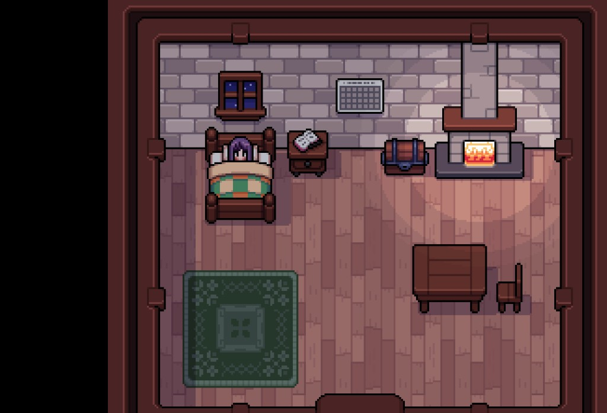
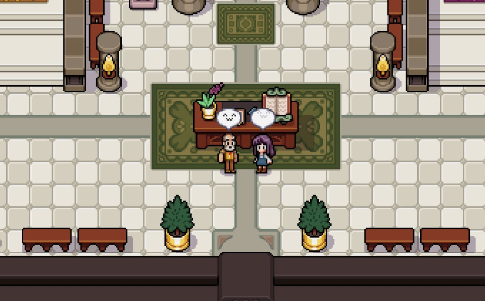
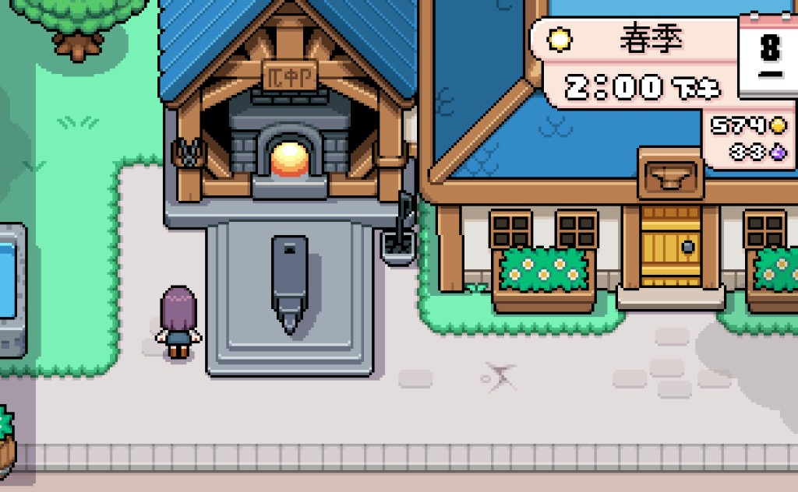
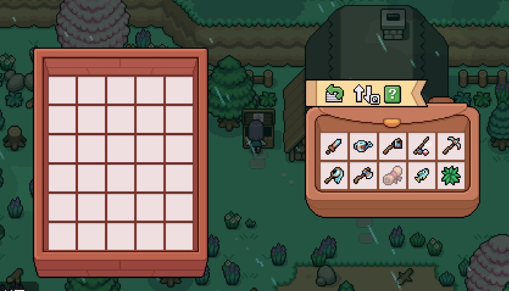

Quick answers
- Expect crop options to shrink—check the shop.
- Mines, fish, forage, and crafting fill days.
- Keep snacks; cold days still drain you.
- Museum and friendships make good winter projects.
- Prepare a spring seed fund before the flip.
What winter days look like
More indoors, more town, more skill practice. Our mindset: do not force a summer-sized field if the season will not support it.
Prep spring
Ship smart, keep a tesserae cushion, repair tools, and tidy chests so Spring 1 is planting—not sorting chaos.
Safe to skip
- Calling winter a “failed year”
- Spending the spring fund on furniture
Screenshots from our save
Real Fields of Mistria shots from our first-season play. Captions in English; in-game UI language may differ.




FAQ
No winter crops?
Lean on other systems; verify shop stock each year.
Bored?
Board quests and museum wings exist for this.
Unofficial fan guide. Not affiliated with NPC Studio. Verify details in your game version.